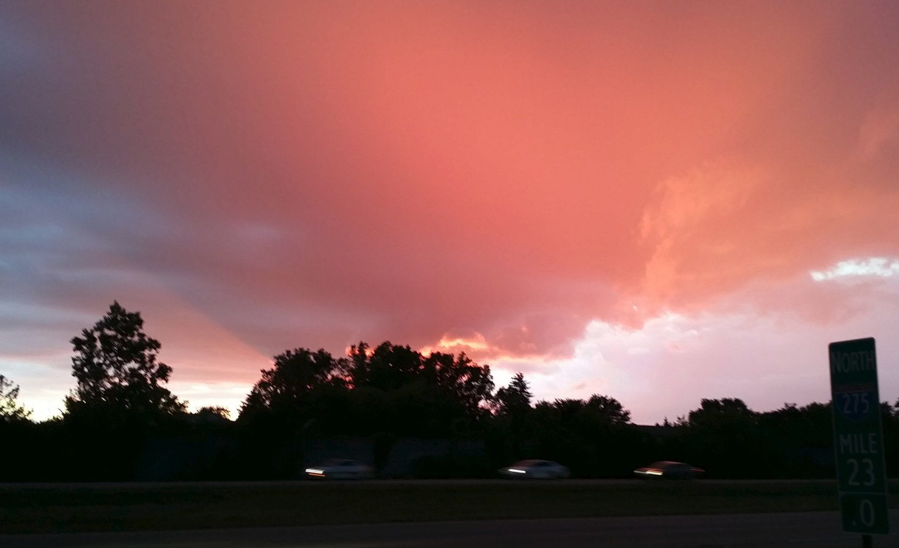

Riding Red
Sometimes I race my bicycle in the twilight,
it is not too dark - there is still plenty of light.
And to be safe, I bring my flashing lamp,
and ride carefully like a real champ.
But, oh boy, oh boy, is it nice,
there are deer, bunnies, and little mice.
Oh, how smell of pine trees mix with smoke from the fireplace,
it smells do good that I want to stop my race.
Sometimes, I do stop to look at the sun go down,
but... I have to imagine the horizon as I am in middle of a town.
And hen the sun gets low enough all the clouds light up red,
finally allowing the darkness to begin to spread.
That's usually when I turn around,
but I love the frogs and crickets and the early night sound.
I wish I could capture it and keep it all,
but all the pictures and videos I take look dull.
I think we should all take time to enjoy these simple treasures,
as these are some of the life's most magnificent pleasures.
